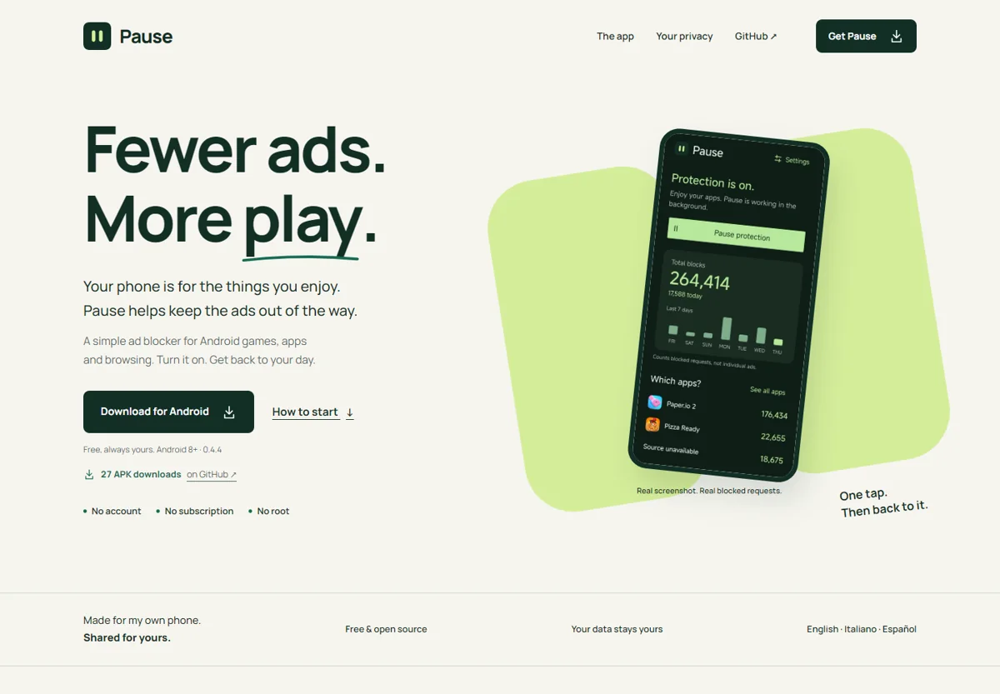
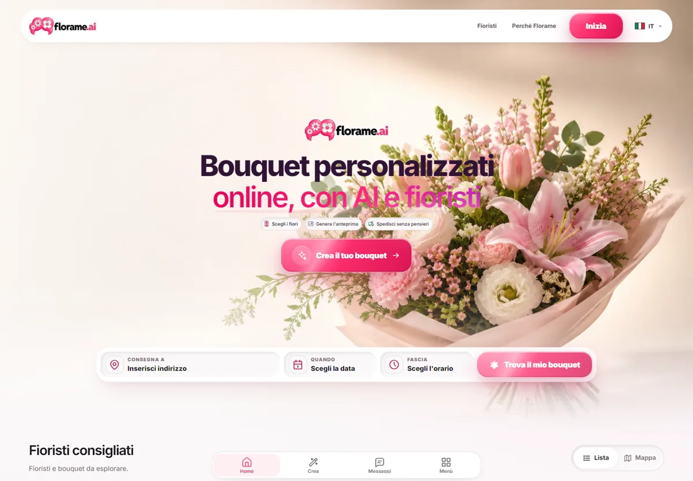
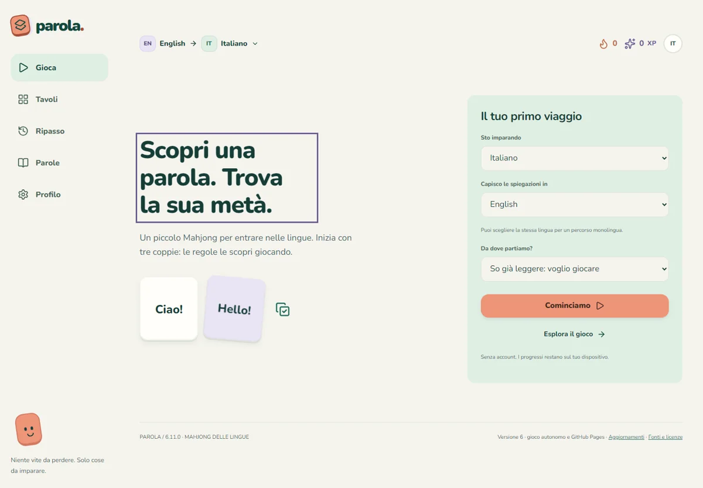
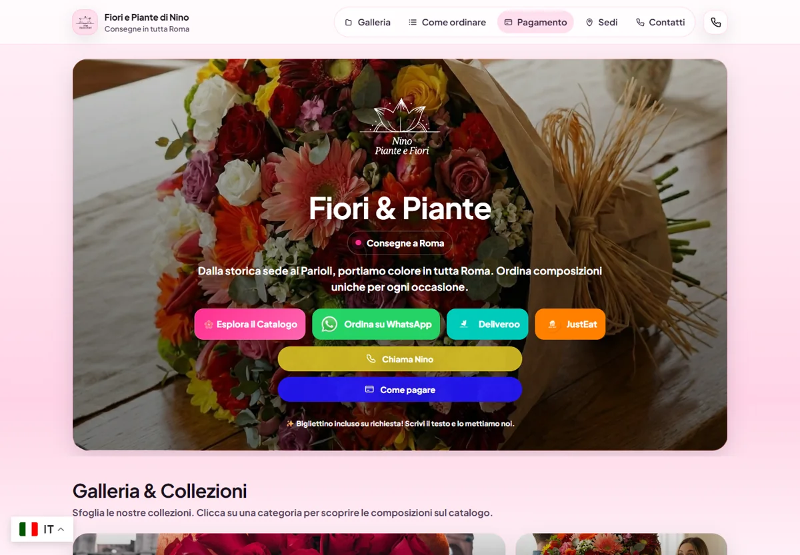
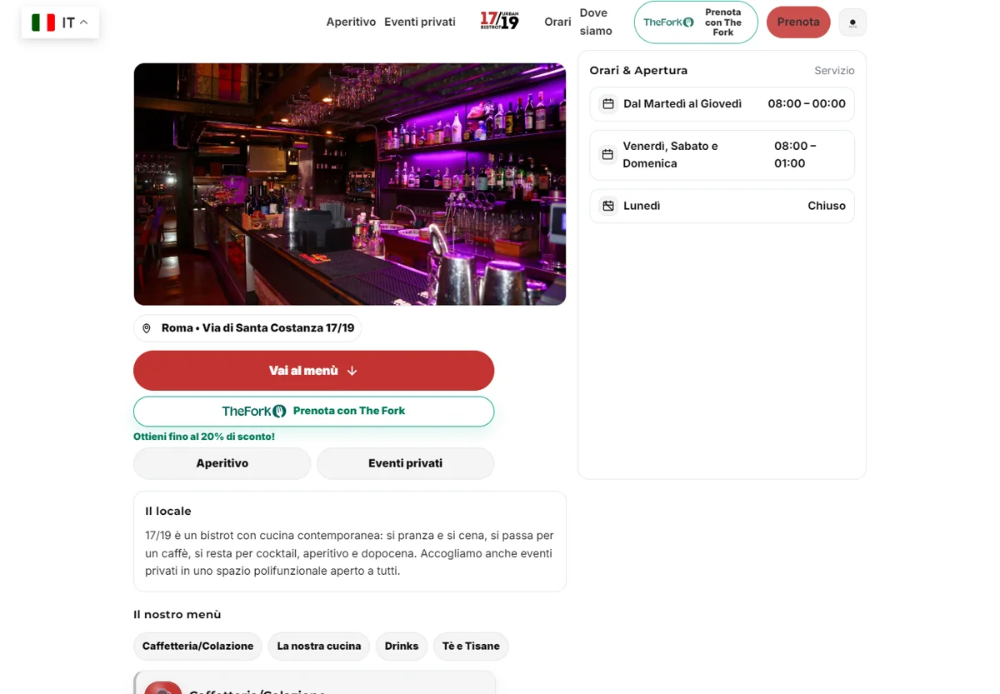
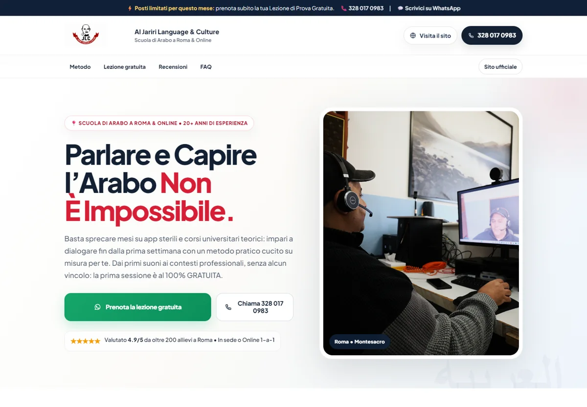

Pause
App Android · Open sourceMeno pubblicità, più spazio per giocare. Un filtro locale semplice, con liste che si aggiornano da sole.
Scopri PauseCostruisco prodotti digitali.
App, siti ed esperienze da usare.
Qui trovi le idee che ho portato online.
Scegli i fiori, immagina il bouquet.
Un fiorista vero lo realizza.

Due progetti personali, nati dalla voglia di fare qualcosa di utile.

Meno pubblicità, più spazio per giocare. Un filtro locale semplice, con liste che si aggiornano da sole.
Scopri Pause
Un piccolo mahjong per incontrare nuove parole. Italiano, inglese, arabo e russo, una coppia alla volta.
Prova ParolaSiti per raccontare un’attività, farsi trovare e arrivare alle persone.
Fiori, piante e consegne a Roma. Catalogo, sedi e contatti, tutti nello stesso posto.
fioriepiante-nino.it
Un bistrot a Roma, anche online. Menù, prenotazioni ed eventi, senza giri inutili.
1719urbanbistrot.it
Lingua e cultura araba, a Roma e online. Un sito per conoscere i corsi e iniziare.
Al Jariri Language & Culture
Oggi il mio progetto principale è florame.ai, dove sono CEO.
Continuo anche a creare app personali e siti web. Alcuni nascono da un bisogno quotidiano, altri dall’incontro con una realtà locale. Mi piace seguirli dall’idea fino a quando si possono aprire, provare e usare.
I miei progetti open source